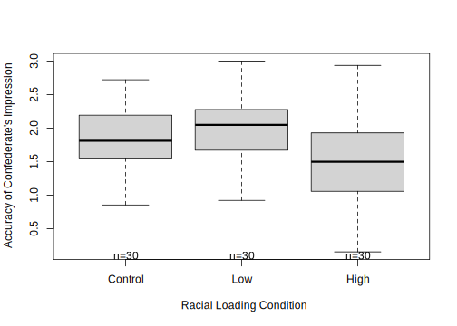

Workflow for One-Way ANOVA
The following is a proposed workflow for conducting a one-way ANOVA. For a separate document See screenshot
{kind=link}

An image of a workflow for the one-way ANOVA
- Prepare (upload) data.
- Explore data
- graphs
- descriptive statistics
- Checking distributional assumptions
- assessing normality via skew, kurtosis, Shapiro Wilks
- checking for violation of homogeneity of variance assumption with Levene’s test; if we violate this we can use Welch’s omnibus ANOVA
- Compute the omnibus ANOVA (remember to use Welch’s if Levene’s p < .05)
- Compute post hoc comparisons, planned contrasts, or polynomial trends
- Managing Type I error
- Sample size/power analysis (which you should think about first – but in the context of teaching ANOVA, it’s more pedagogically sensible, here)
2.2 Motivational Example
The exceptionalizing racial stereotype is microaggression framed as interpersonally complimentary, but perpetuates negative stereotypical views of a racial/ethnic group. We are using data that is simulated from a random clinical trial (RCT) conducted by Tran and Lee (2014).
The one-way ANOVA examples we are simulating represent the post-only design which investigated three levels of the exceptionalizing stereotype in a sample of Asian American participants. This experimental design involved a confederate (posing as a peer) whose parting comment fell into the low racial loading, high racial loading, or control conditions.

Opening image
Tran and Lee (2014) reported results from two ANOVAs and 4 ANCOVAs, using a pre-test as a covariate. A preprint of the article is available here.
- Accurate is the DV we will be exploring in class. Participants rated how accurate they believed their partner’s impression of them was (0 = very inaccurate, 3 = very accurate).
- moreTalk is the DV assigned for homework. Participants rated how much longer they would continue the interaction with their partner compared to their interactions in general (-2 = much less than average, 0 = average, 2 = much more than average)
###1. Preparing and Uploading Data
#for a .csv file
accSIM30 <- read.csv ("Acc_sim30_df.csv", head = TRUE, sep = ",")
# head=TRUE yields column headings;
# sep = "," tells R that we are using a .csv file (comma separated values)Examining data is super useful in determining which ANOVA to use.
- look at it by clicking on it
- examine its structure with the str() function
## 'data.frame': 90 obs. of 3 variables:
## $ ID : int 1 2 3 4 5 6 7 8 9 10 ...
## $ COND : chr "High" "High" "High" "High" ...
## $ Accurate: num 1.86 1.75 2.59 1.38 2.03 ...If we look at this super simple dataset, we see that we see that
- COND is a grouping variable) with 3 levels (high, low, control)
- it is presently in “chr” (character) format, it needs to be a factor
- Accurate is a continuous variable
- it is presently in “num” (numerical) format, which is fine
There are many ways to convert variables to factors; here’s one of the simplest.
Let’s recheck the structure
## 'data.frame': 90 obs. of 3 variables:
## $ ID : int 1 2 3 4 5 6 7 8 9 10 ...
## $ COND : Factor w/ 3 levels "Control","High",..: 2 2 2 2 2 2 2 2 2 2 ...
## $ Accurate: num 1.86 1.75 2.59 1.38 2.03 ...R orders factors alphabetically. This means, analysis will assume that “Control” (C) is the lowest condition, then “High,” then “Low.” Since these have theoretically ordered values, we want them ordered “Control,” “Low,” “High.”
## 'data.frame': 90 obs. of 3 variables:
## $ ID : int 1 2 3 4 5 6 7 8 9 10 ...
## $ COND : Factor w/ 3 levels "Control","Low",..: 3 3 3 3 3 3 3 3 3 3 ...
## $ Accurate: num 1.86 1.75 2.59 1.38 2.03 ...R will always guess the variable format when importing a .csv and, in this case, it will always guess incorrectly. We need to write our script so that we are always checking and updating the structure of variables.
2.2.1 2. Exploring Data
If we just want to grab a quick mean, and then a standard deviation
## COND Accurate
## 1 Control 1.876882
## 2 Low 2.046506
## 3 High 1.473640## COND Accurate
## 1 Control 0.4791969
## 2 Low 0.5725299
## 3 High 0.7653157Before looking at the graphs, we can see that racially loaded high condition has the lowest accuracy score and the largest variability. Let’s take a look at the graphs to “see” this.
2.2.1.1 First with graphs.
First, a line graph. This plots the means with error bars (95% confidence intervals) around the mean. We can think, “How confident are we that the mean is this particular value?”
##
## Attaching package: 'gplots'## The following object is masked from 'package:stats':
##
## lowessplotmeans (formula = Accurate ~ COND, #plots DV by IV
data = accSIM30, #identifies the data frame
xlab = "Racial Loading Condition", #let's us specify a label for the x-axis
ylab = "Accuracy of Confederate's Impression", #let's us specify a label for the y-axis
n.label = TRUE #we can even specify the sample size for each level of the group
)
#you can totally write this in one row
#plotmeans (formula = Accurate ~ COND, data = accSIM30, xlab = "Racial Loading Condition", ylab = "Accuracy of Confederate's Impression", n.label = TRUE)Viewed another way, we can create a boxplot. In the boxplot, the center value is the median. The box spans the interquartile range, ranging from the 25th to the 75th percentile. The whiskers theoretically include the minimum and maximum. Theoretically they cover 1.5 times the interquartile range and represent outliers with dots.
boxplot2 (Accurate ~ COND, data = accSIM30, xlab = "Racial Loading Condition", ylab = "Accuracy of Confederate's Impression", n.label = TRUE)
From both the boxplot and the linegraph with error bars, we can see that as the the contol and low racial loading conditions have a comparable level of the accuracy variable (i.e., the degree to which the confederate’s impression is accurate). Participants in the high racial loading condition reported a lower level of accuracy).
2.3 Understanding ANOVA
ANOVA was developed by Sir Ronald Fisher in the early 20th century. The name is a bit of a misnomer – rather than analyzing variances, we are investigating differences in means (but the formula does take variances into consideration…stay tuned).
ANOVA falls squarely within the tradition of null hypothesis significance testing (NHST). As such, a formal ANOVA begins with statements of the null and alternate hypotheses. Note. Tran and Lee (2014) do not list such.
In our example, we would hypothesize that the population means (i.e., Asian or Asian American individuals in the U.S.) are equal:
\[H_{O}: \mu _{1} = \mu _{2} = \mu _{3}\]
There are an number of ways that the \(H_{O}\) could be false. Here are a few:
\[H_{a1}: \mu _{1} \neq \mu _{2} \neq \mu _{3}\] \[H_{a2}: \mu _{1} = \mu _{2} > \mu _{3}\]
\[H_{a3}: \mu _{1} > \mu _{2} > \mu _{3}\] The bottom line is that somewhere between the three levels of the grouping factor, the means are statistically significantly different from each other.
In evaluating the differences between means, one-way ANOVA compares:
- systematic variance to unsystematic variance
- explained to unexplained variation
- experimental effect to the individual differences
- model variance to residual variance
- between group variance to within group variance (in an experiment)
The ratio of these variances is the F-ratio.
Navarro (2020) offers a useful figure to compare between- and within-group variation.
 ### Sums of Squares Total
### Sums of Squares Total
\[SS_{T}= \sum (x_{i}-\bar{x}_{grand})^{2}\] \[SS_{T}= SS_{M} + SS_{R}\] \[SS_{T}= SS_{B} + SS_{W}\] \[SS_{T}= s_{grand}^{2}(n-1)\] Let’s take a moment to hand-calculate \(SS_{T}\) (but in R).
Our grand (i.e., overall) mean is
## [1] 1.799009Subtracting the grand mean from each Accurate score yields a mean difference.
## -- Attaching packages --------------------------------------- tidyverse 1.3.0 --## v ggplot2 3.3.3 v purrr 0.3.4
## v tibble 3.0.4 v dplyr 1.0.2
## v tidyr 1.1.2 v stringr 1.4.0
## v readr 1.4.0 v forcats 0.5.0## -- Conflicts ------------------------------------------ tidyverse_conflicts() --
## x dplyr::filter() masks stats::filter()
## x dplyr::lag() masks stats::lag()Pop quiz: What’s the sum of our new m_dev variable?
## [1] -5.421372e-17If we square those mean deviations:
If we sum the squared mean deviations:
## [1] 38.34623This value, the sum of squared deviations around the grand mean, is our \(SS_T\); the associated degrees of freedom is \(N\) - 1.
In one-way ANOVA, we divide \(SS_T\) into model/between sums of squares and residual/within sums of squares.
The model generally represents the notion that the means are different than each other. We want the variation between our means to be greater than the variation within each of the groups from which our means are calculated.
2.3.1 Sums of Squares for the Model
\[SS_{M}= \sum n_{k}(\bar{x}_{k}-\bar{x}_{grand})^{2}\]
## [1] 1.799009## COND Accurate
## 1 Control 1.876882
## 2 Low 2.046506
## 3 High 1.473640This formula occurs in three chunks, representing the control, low, and high racial loading conditions. In each of the chunks we have the \(n\), group mean, and grand mean.
## [1] 5.17689This value, \(SS_M\) is the value accounted for by the model – the proportion of variance accounted for by the grouping variable/factor, COND.
2.3.2 Sums of Squares Residual (or within)
\[SS_{R}= \sum(x_{ik}-\bar{x}_{k})^{^{2}}\] Here’s another configuration of the same:
\[SS_{R}= s_{group1}^{2}(n-1) + s_{group2}^{2}(n-1) + s_{group3}^{2}(n-1))\] Again, the formula is in three chunks – but this time the calculations are within-group. We need the variance (the standard deviation squared) for the calculation.
## COND Accurate
## 1 Control 0.4791969
## 2 Low 0.5725299
## 3 High 0.7653157## [1] 0.2296297## COND Accurate
## 1 Control 0.2296297
## 2 Low 0.3277905
## 3 High 0.5857082Calculating \(SS_R\)
## [1] 33.1499The value for our \(SS_R\) is 33.15. It’s degrees of freedom is \(N - k\), meaning the total \(N\) minus the number of groups: 90 - 3 = 87.
2.4 Mean Squares Model & Residual
Now that we have the Sums of Squares, we can calculate the mean squares (we need these for our \(F\) statistic).
\[MS_M = \frac{SS_{M}}{df^{_{M}}}\]
In our case, \(MS_M=\)
## [1] 2.588445And \(MS_R=\) \[MS_R = \frac{SS_{R}}{df^{_{R}}}\] Recall, df for the resitual is N - k (in our case that’s 90 - 3)
## [1] 0.38103332.5 All that’s left is the F - ratio
\[F = \frac{MS_{M}}{MS_{R}}\]
## [1] 6.793225These last few calculations are actually less complicated than this presentation makes them seem. We should play Source Table Games!
Knowing only two of the values, challenge yourself to complete the rest of the table.

Opening image
To determine whether or not it is statistically significant, we can check an table of critical values for the F test. Here’s a handy one:
https://www.statology.org/how-to-read-the-f-distribution-table/
Our example has 2 (numerator) and 87 (denominator) degrees of freedom. Rolling down to the table where \(\alpha = .05\), we can see that any \(F\) value > 3.11 (a value somewhere between 3.07 and 3.15) will be statistically significant. Our \(F\) = 6.79, so we have clearly exceeded the threshhold. This is our omnibus F. We know there is at least 1 statistically significant difference between our control, low, and high racially loaded conditions.
References
Tran, A. G. T. T., & Lee, R. M. (2014). You speak English well! Asian Americans’ reactions to an exceptionalizing stereotype. Journal of Counseling Psychology, 61(3), 484–490. https://doi.org/10.1037/cou0000034